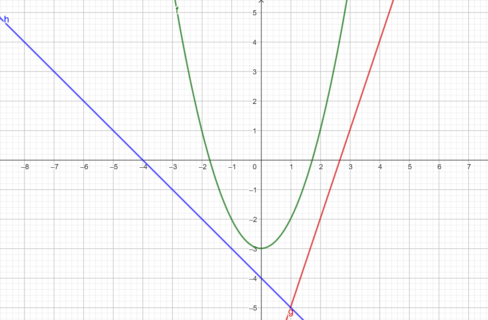
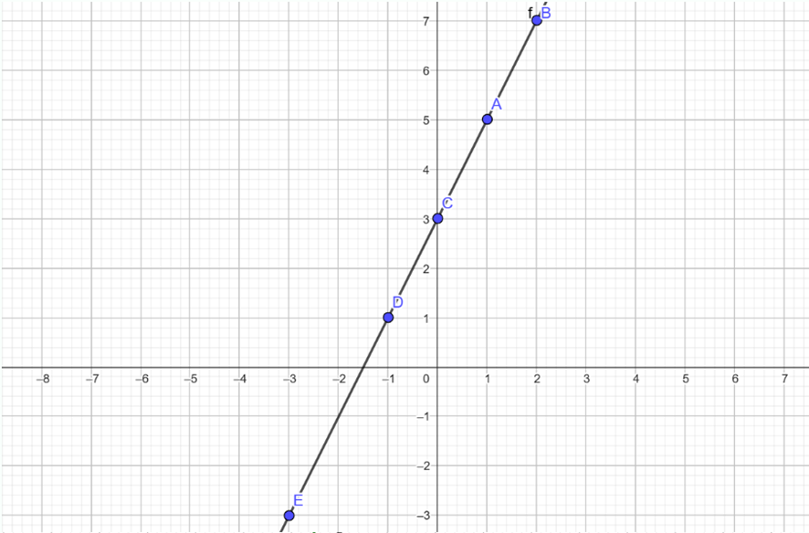
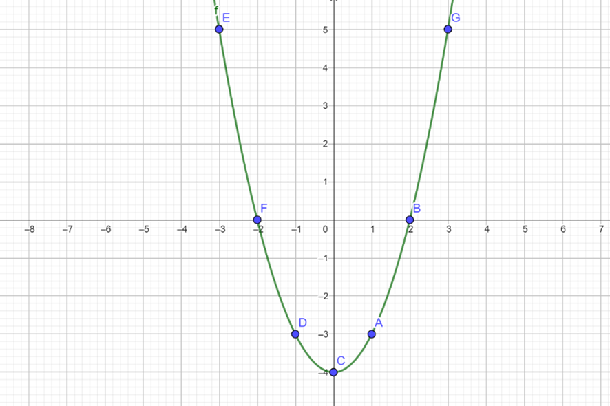
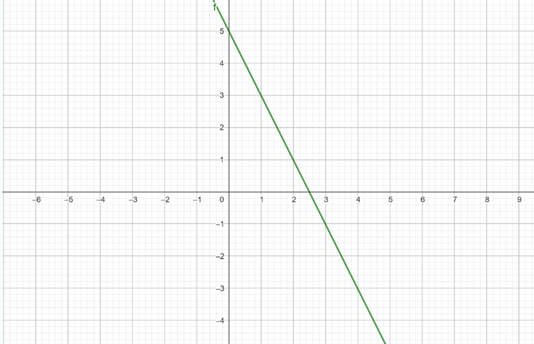

Una función se puede representar de muchas formas...
Ya hemos entendido el concepto de función, espero que lo recuerdes.
Ahora vamos a estudiar cómo se puede representar una función.
Una función se puede representar de 4 formas diferentes:
- Mediante una FRASE: ya lo hemos estudiado. Puedes describir "la función que hace la máquina" utilizando palabras, por ejemplo "una máquina que multiplica cada número por 3 y le resta 8".
- Mediante una FÓRMULA: ya lo hemos estudiado. Puedes representar en lenguaje algebraico "la frase que describe la función de la máquina", por ejemplo y=3x-8, o lo que es lo mismo, f(x)=3x-8
- Mediante una TABLA DE VALORES: ESTO ES NUEVO. Este modo de representación describe diferentes imágenes que devuelve la función ante ciertas entradas, es decir, diferentes 'y' ante ciertas 'x'. Por ejemplo:
| x | y |
| -2 | 5 |
| 0 | 3 |
| 1 | -1 |
| 3 | 8 |
- Mediante una GRÁFICA: ESTO ES NUEVO. Este modo de representación describe, como su nombre indica, la función de forma gráfica. Para ello previamente se realiza un estudio de la función (tenemos que estudiar todas sus características, pero eso es muy complejo ahora mismo, así que ahora bastará con hacer una tabla de valores, representar esos puntos en el plano y unirlos. Por ejemplo, en la siguiente gráfica se representan 3 funciones de forma gráfica:

Autoría: Óscar Gómez Palomares. ©
¿Cómo pasamos de una forma a otra?
- Pasar de fórmula a tabla de valores: calculamos las imágenes para varios valores de 'y' y los vamos representando en una tabla de valores como la anterior.
- Pasar de tabla de valores a gráfica: representar los puntos de la tabla de valores en el plano y unirlos.
- Pasar de fórmula a gráfica: realizamos un estudio completo de la función, estudiando sus características. Pero, como aún no hemos estudiado las características de una función (estamos todavía introduciendo el concepto), de momento nos quedamos en pasar por la tabla de valores para poder representar la gráfica de la función.
¿Y al revés?
- Pasar de gráfica a tabla de valores: buscamos varios puntos en la gráfica y los representamos en la tabla de valores.
Veamos algunos ejemplos
EJEMPLO 1
f(x) = 2x + 3
| x | y |
| 1 | 5 |
| 2 | 7 |
| 0 | 3 |
| -1 | 1 |
| -3 | -3 |

Autoría: Óscar Gómez Palomares. ©
EJEMPLO 2
f(x) = x2 - 4
| x | y |
| 1 | -3 |
| 2 | 0 |
| 0 | -4 |
| -1 | -3 |
| -3 | 5 |

Autoría: Óscar Gómez Palomares. ©
EJEMPLO 3 (INVERSO)

Autoría: Óscar Gómez Palomares. ©
| x | y |
| 0 | 5 |
| 1 | 3 |
| 2 | 1 |
| 3 | -1 |